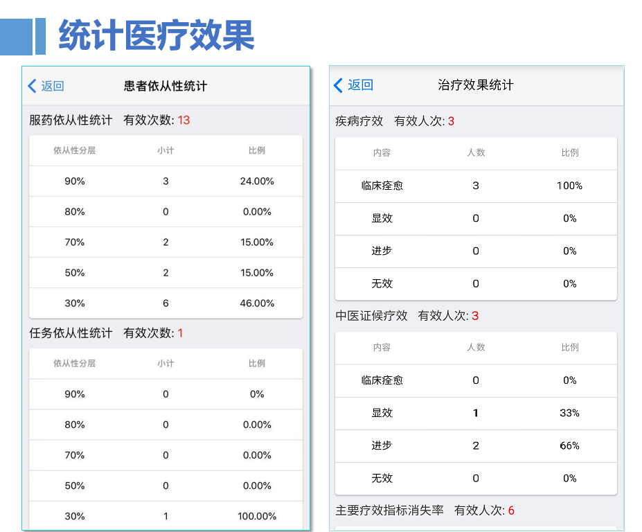
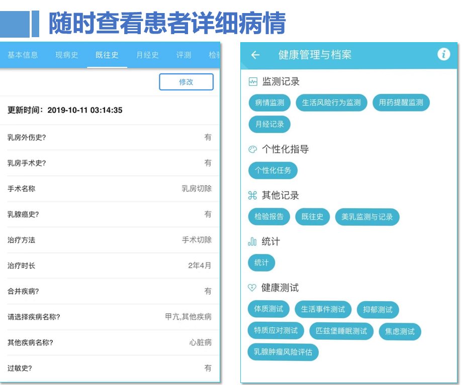

乳腺慢病监测智能管理研究平台针对女性乳腺慢性疾病，以临床经验为基础，以患者为中心，以促进患者的全面健康为目标， 是集乳腺慢病风险评估、监测、预警、术后康复等为一体的自我管理和辅助治疗平台。
主要功能：

(1)提前一天了解病情，提前安排病人检查，减少二次排队现象，提高诊疗效率。
(2)优化了病人来医院看病前的繁琐工作，将常规性问题和慢性病节点问题通过系统提前让病人完成，大大减少医生在门诊中大量的常规性问诊工作量。
(3)现场可快速查看病人的病情异常汇总，只需要花几分钟针对其中有疑问或不清楚的地方向病人当面核实后修改和确认病情；随时随地在网上开展接受病人的咨询和快速开具处方。
(4)可以在很大程度上减少专科医生日常繁琐的对药物的疗效观察、术后随访、不良反应观察、咨询和健康教育、患者生活方式管理等诸多方面的负担。
(5)统计医疗效果：平台可以自动统计药物的疗效包括患者的痊愈、显效、进步、无效人数，以及症状的消失率等，统计分析乳腺疾病危险因素与药物的相关性，为医学研究提供大量完整、可用、规范的数据。
(6)为医生的临床决策提供患者全面和准确、连续性的信息，让医生掌握患者病情的发展及趋势，进而做出更适合患者的个性化医疗服务方案。
(7)发布防治技术指南和规范、共识性意见等，提高基层医疗单位的技术水平。
(8)发表高质量的科普文章，可以提高病人的健康素养，减少日常工作中病人反复重复提及的问题，以减少回复病人日常咨询的工作量。
(9)可转诊、会诊，与基层医院对接：辅助基层医生进行诊断，提升基层医院的诊疗水平。

平台创新点
1.国内首创，可用于预防和治疗的软件型新药；
2.实现乳腺癌高危因素及其人群辨识、智慧诊疗和临床治疗方案优化 ，利于发现乳腺慢病的流行病学规律；
3.实时数据监控分析，区别于一般病历或健康档案的建立和应用。
4.系统主动预警，智能与人工科学评估相结合，提高预防和治疗乳腺疾病的水平；
5.优化医生看病前的繁琐工作，将常规性问题和慢性病节点问题通过系统提前让病人完成，降低医生问诊工作量
我们的优势
1.十多年临床经验 乳腺疾病治疗、新药研发、慢病管理等丰富的临床经验
2.医院网络 具有广泛、专业的高端医疗渠道
3.核心技术 乳腺肿瘤风险智能监测的数据库+逻辑量化表及智能分析系统
4.24小时智能健康监护服务+线下网络式服务
5.紧贴患者需求